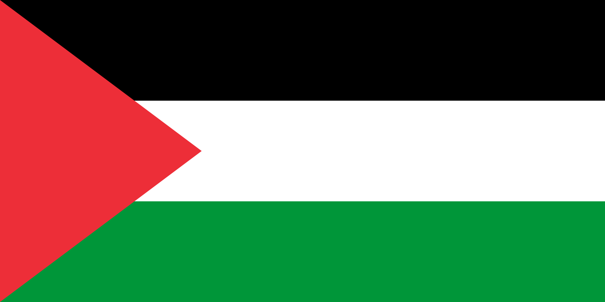

Quds
The historic and spiritual capital of Palestine

تعرف على المدن الفلسطينية، المعالم التاريخية، والثقافة الفلسطينية العريقة.
The historic and spiritual capital of Palestine

One of the oldest cities in Palestine
A historic coastal city on the Mediterranean Sea

A major city in the southern Gaza Strip

A historic area known for its rich culture, and famous old city.
center with a rich history dating back thousands of years.
اتصل لنصل 681431028@ftu.ac.th